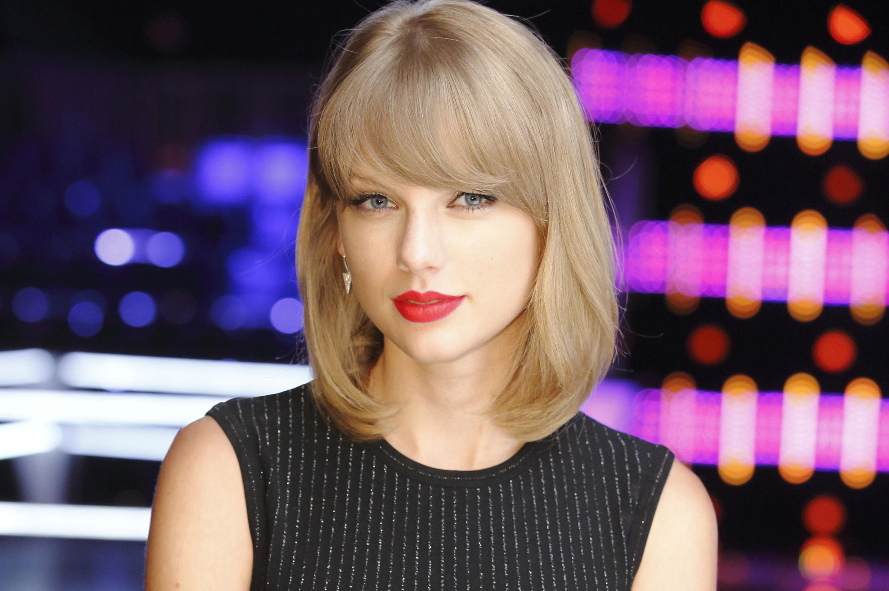
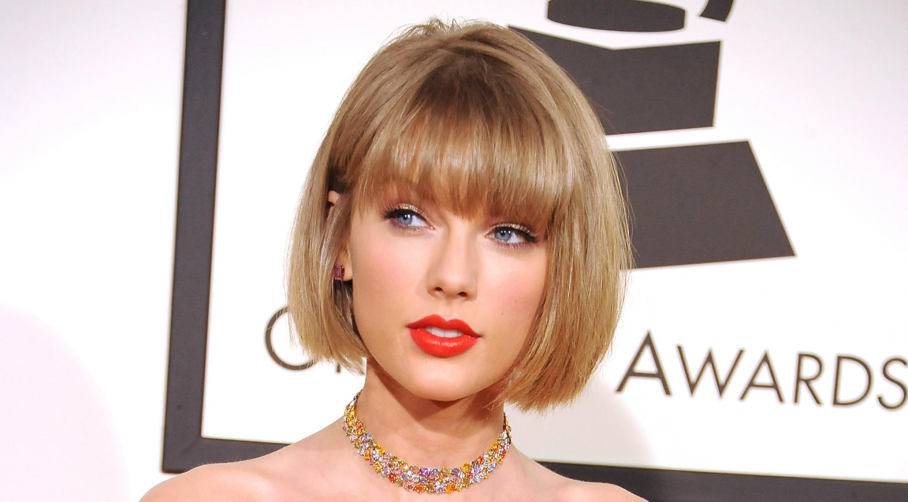

Taylor Alison Swift (West Reading, Pensilvania, 13 de diciembre de 1989) es una cantante, compositora, productora discográfica, directora, actriz y empresaria estadounidense. Criada en Wyomissing (Pensilvania), se mudó a Nashville (Tennessee) a los 14 años para realizar una carrera de música country. Firmó con la compañía discográfica independiente Big Machine Records y se convirtió en la artista más joven contratada por Sony/ATV Music Publishing House.
Taylor comenzó a escribir canciones profesionalmente a los 14 años y firmó con Big Machine Records en 2005 para convertirse en cantante de country, siendo la artista más joven contratada por Sony Music Publishing. Lanzó seis álbumes de estudio bajo el sello, cuatro de ellos para la radio country, empezando con su álbum debut Taylor Swift (2006). Su siguiente álbum, Fearless (2008), exploró el country pop y sus sencillos «Love Story» y «You Belong with Me» la catapultó a la fama, siendo el álbum más premiado en la historia de la música country.3 En 2010, Speak Now trajo la influencia rock, vendiendo un millón de copias en su primera semana en los Estados Unidos. Mientras tanto, Red (2012) experimentó con elementos electrónicos y presentó la primera canción número uno del Billboard Hot 100 de Taylor, «We Are Never Ever Getting Back Together». Su quinto álbum, 1989 (2014) la alejo de su imagen country,4 acercándola al synth-pop respaldado por las canciones que encabezaron las listas «Shake It Off», «Blank Space» y «Bad Blood», que convirtieron a Taylor en la primera mujer en los cincuenta y seis años del Billboard Hot 100 en destronar a su propia canción y sustituirse a sí misma en el primer lugar.5 El escrutinio de los medios inspiró Reputation (2017) con un estilo a hip-hop, que logró que su sencillo «Look What You Made Me Do» llegara al número uno.

Taylor firmó con Republic Records en 2018. Lanzó el álbum pop ecléctico Lover (2019) y el documental autobiográfico Miss Americana (2020), mientras exploraba el indie folk y el rock alternativo en los álbumes de 2020, Folklore y Evermore. En 2022, uso el estilo pop discreto en su álbum Midnights, que volvió a consolidarla en las listas de Billboard Hot 100. Estos álbumes generaron las canciones «Cruel Summer», «Cardigan», «Willow» y «Anti-Hero», que llegaron al número uno en las listas. Tras una disputa contra Big Machine Records por el control de su másteres, Taylor comenzó a regrabar los álbumes que lanzó con la discográfica con los subtítulos Taylor's Version. Teniendo hasta el momento cuatro de sus seis primeros albúmes regrabados a 2023, estas versiones trajeron de regreso los éxitos pasados de Taylor como «All Too Well» que lideró las listas por primera vez, al mismo tiempo ofreció nuevas canciones tituladas «From The Vault» como «Is It Over Now?». El Eras Tour, su gira de conciertos 2023-2024 y la película del concierto que la acompaña se convirtieron en las más taquilleras de la historia en sus respectivos campos. Taylor dirigió vídeos musicales y películas como All Too Well: The Short Film (2021).
Es conocida por escribir canciones narrativas y composiciones acerca de sus experiencias personales. Como compositora, ha sido honrada por la Nashville Songwriters Association y el Salón de la Fama de los Compositores. Entre otros logros de Swift se incluyen 14 premios Grammy, un Emmy, 25 Billboard Music Awards, 40 American Music Awards, un premio Brit, 23 MTV Video Music Awards, 11 Country Music Association Awards, así como dos nominaciones al Globo de Oro. Ha vendido más de 50 millones de álbumes y 150 millones de descargas digitales de sus sencillos, convirtiéndola en una de las artistas con mayores ventas discográficas del mundo.

Además de su dilatada carrera musical, apareció como actriz invitada en un episodio de la serie de televisión CSI: Crime Scene Investigation (2009); actuó en la película de comedia Valentine's Day (2010), en la película animada The Lorax (2012) en la cual proporcionó su voz al personaje de Audrey, y tuvo un papel secundario en la película The Giver (2014), así como en Cats (2019) y Amsterdam (2022).
Como filántropa, apoya la educación artística, la alfabetización de los niños, los fondos de ayuda ante desastres naturales, el feminismo, los derechos LGBT e instituciones de beneficencia para niños enfermos.

Debido a diversos factores, como su impacto en el mundo de la música, su sostenido éxito comercial y su influencia mediática, Taylor Swift fue nombrada en 2019 como la «mujer de la década» por la revista Billboard, en tanto que en los American Music Awards fue reconocida como la «artista de la década».6 En el año 2023 fue declarada la «persona del año» por la Revista Time, convirtiéndose en la primera artista en aparecer en dicha portada sólo por su trabajo, mientras que Forbes la posicionó como la quinta mujer más poderosa del mundo, siendo la única cantante de todo el listado.78 En el año 2024, la Federación Internacional de la Industria Fonográfica (IFPI) reveló que Taylor Swift fue la artista femenina con mayores ventas de la década de 2010 y de lo que va de la década de 2020.